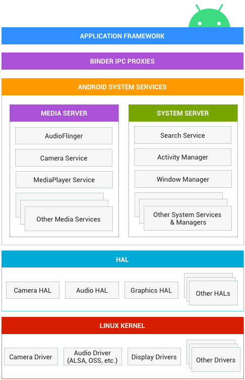

Android Framework¶
Android架构组件¶
应用框架：应用框架最常被应用开发者使用。作为硬件开发者，需了解开发者API，因为很多此类API都可以直接映射到底层HAL接口，并可提供与实现驱动程序相关的实用信息
Binder IPC：Binder 进程间通信 (IPC) 机制允许应用框架跨越进程边界并调用Android系统服务代码，这使得高级框架API能与Android系统服务进行交互。在应用框架级别，开发者无法看到此类通信的过程，但一切似乎都在“按部就班地运行”
系统服务。：统服务是专注于特定功能的模块化组件，例如窗口管理器、搜索服务或通知管理器。应用框架API所提供的功能可与系统服务通信，以访问底层硬件。Android 包含两组服务：“系统”（诸如窗口管理器和通知管理器之类的服务）和“媒体”（与播放和录制媒体相关的服务）。
硬件抽象层 (HAL)：HAL 可定义一个标准接口以供硬件供应商实现，这可让Android忽略较低级别的驱动程序实现。借助HAL，可以顺利实现相关功能，而不会影响或更改更高级别的系统。HAL实现会被封装成模块，并会由Android系统适时地加载
Linux 内核：开发设备驱动程序与开发典型的Linux设备驱动程序类似。Android使用的Linux内核版本包含一些特殊的补充功能，例如低内存终止守护进程（一个内存管理系统，可更主动地保留内存）、唤醒锁定（一种 PowerManager 系统服务）、Binder IPC 驱动程序，以及对移动嵌入式平台来说非常重要的其他功能。这些补充功能主要用于增强系统功能，不会影响驱动程序开发